101 tema siap pakai
Undangan yang kebuka, bukan yang bikin tamu nunggu.
Halaman pertamanya 22 KB. Tamu kalian buka di parkiran gedung dengan sinyal satu bar, dan tetap muncul.
101 tema, semuanya bisa dibuka sekarang
Bukan gambar contoh. Tiap kartu di bawah membuka undangan sungguhan yang jalan, lengkap dengan hitung mundur dan RSVP-nya.
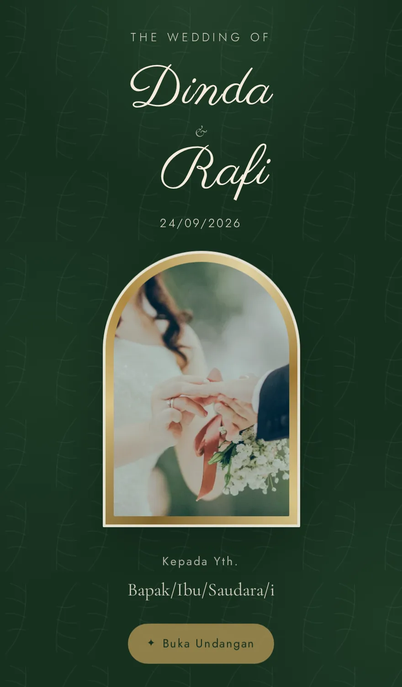
Forest Lace
Hijau botani gelap, renda krem, emas antik. Tema pertama Ikat, dan paling formal dari semuanya.
unik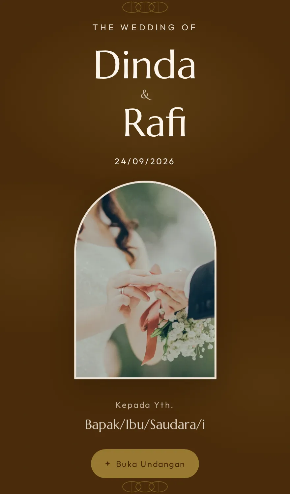
Batik Solo
Sogan Solo dan indigo. Batik tulis yang nggak perlu dijelaskan.
adat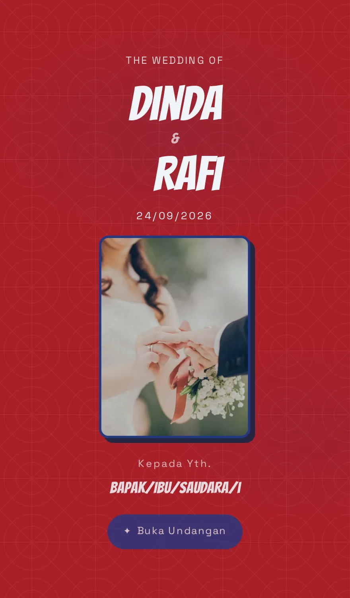
Spiderman
Merah, biru, dan jaring laba-laba. With great love comes great responsibility.
pop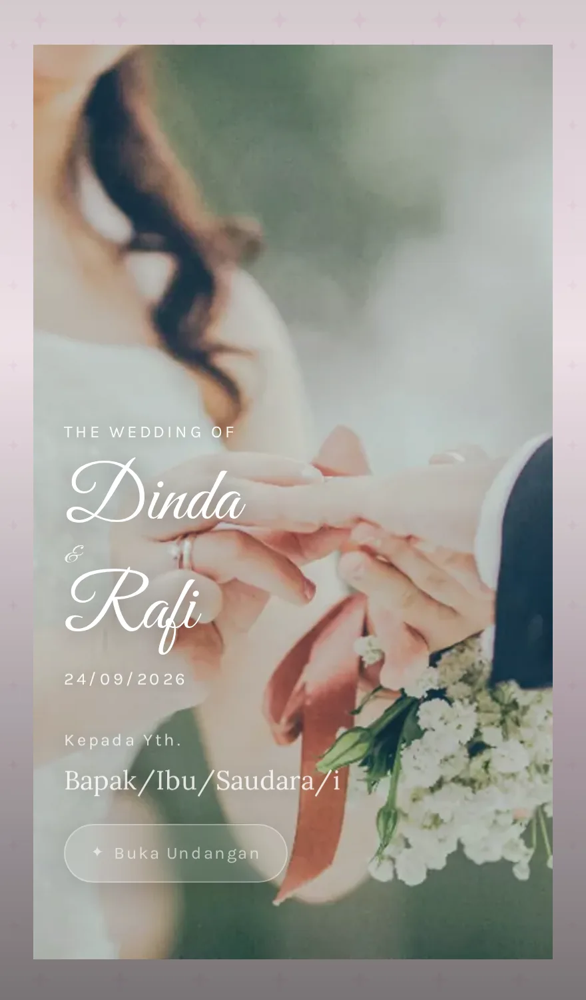
Barbie Dream
Pink Barbie yang ikonik. Hi Barbie! Hi Ken! Selamat menikah!
pop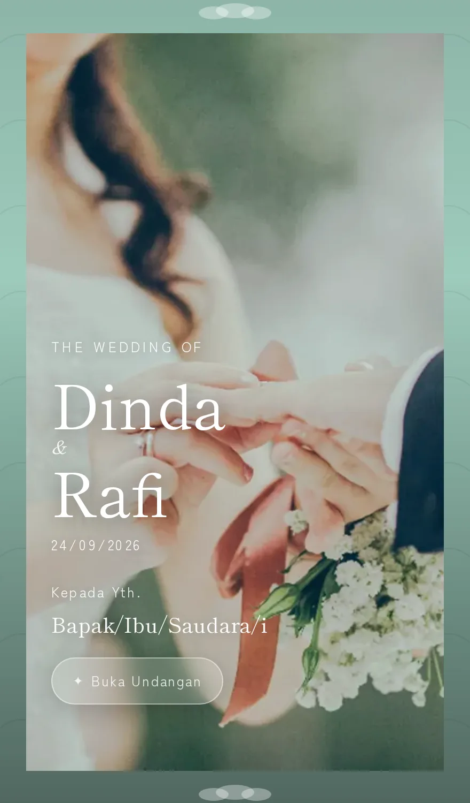
Ghibli Breeze
Angin Totoro dan langit Laputa. Lembut, hangat, penuh keajaiban kecil.
pop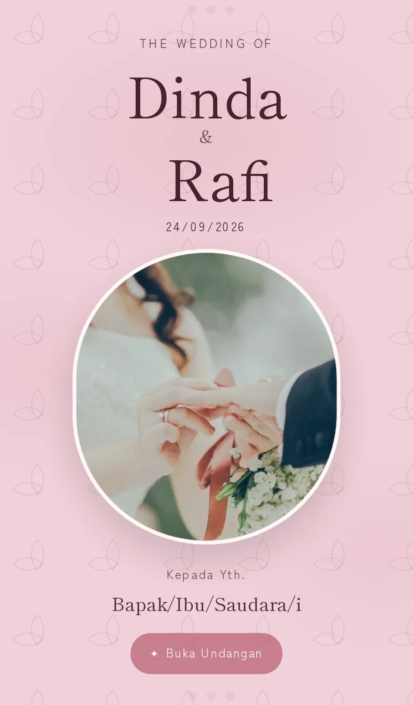
Cherry Blossom
Sakura yang gugur pelan. Hanami yang jadi janji seumur hidup.
pastel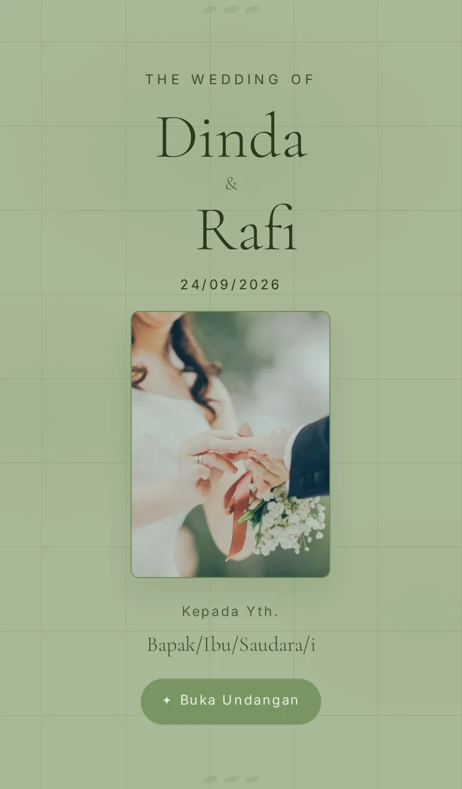
Olive Grove
Kebun zaitun Tuscany. Hijau yang matang, bukan yang mentah.
hangat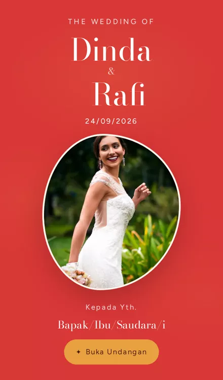
Sunset Blvd
Sunset Boulevard — pink, oranye, dan palm tree yang siluet.
hangatNoir Editorial
Hitam pekat dan gading, tipografi yang jadi bintangnya. Buat pasangan yang nggak mau bunga sama sekali.
unik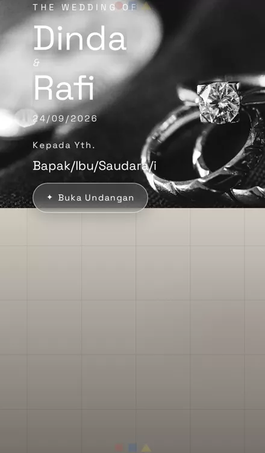
Bauhaus
Merah, biru, kuning — dan garis yang jujur. Bentuk ikut fungsi.
unik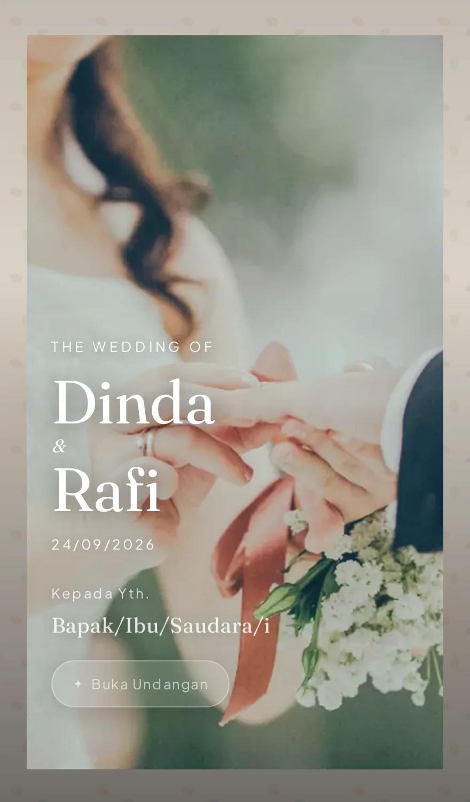
Terrazzo
Lantai terrazzo Italia — bintik warna yang random tapi harmonis.
unik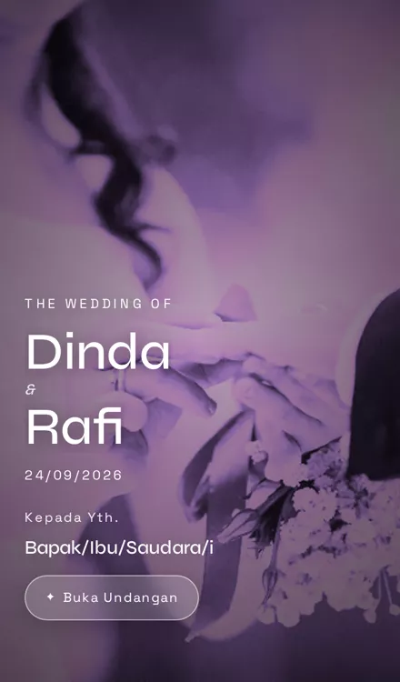
Y2K Chrome
Chrome, hologram, dan nostalgia 2000-an. Future yang udah lewat.
unikYang bikin beda bukan bunganya
Undangan cantik itu barang biasa sekarang. Empat hal ini yang jarang diurus orang.
22 KB
Kebuka sebelum tamu sempat nutup
Halaman pertama cuma 22 KB (terkompresi), diukur dari situs yang beneran live, bukan di laptop sendiri. Undangan yang ngirim 5 MB bakal gagal di parkiran gedung dengan sinyal satu bar, dan di situlah tamu kalian bakal membukanya.
01
Tiap tamu dapat namanya sendiri
Link-nya bawa nama tamu, muncul di sampul, dan form RSVP-nya terisi otomatis. Nggak perlu mereka ngetik ulang.
02
Ganti tema tanpa ulang dari awal
Data kalian kepisah dari tampilan. Ganti tema itu satu setelan, bukan bikin ulang. 101 tema, semuanya bisa dicoba sebelum mutusin.
03
Nggak punya foto prewed? Tetap jadi
Tanpa foto, sampulnya berubah jadi monogram terukir yang memang dirancang, bukan kotak kosong. Banyak pasangan nggak sempat atau nggak mau prewed, dan itu bukan versi cacat.
Harga
Sekali bayar, nggak ada langganan. Harga di bawah sudah termasuk pemasangan data kalian.
Basic
Buat yang butuh cepat dan beres
Rp 99.000 sekali bayar
- Pilih 1 dari 101 tema
- Link personal per tamu
- RSVP dan dinding tamu
- Hitung mundur dan tombol lokasi
- Aktif 1 tahun
Plus
Paling banyak dipakai
Rp 199.000 sekali bayar
- Semua 101 tema, boleh gonta-ganti
- Warna disesuaikan foto kalian
- Galeri foto dan musik pilihan sendiri
- Amplop digital dan salin rekening
- Rekap tamu bisa diunduh
- Aktif 2 tahun
Custom
Kalau maunya nggak ada di daftar
Rp 499.000 sekali bayar
- Tema dirancang khusus dari nol
- Nama domain sendiri
- Ilustrasi atau motif custom
- Dua kali revisi desain
- Aktif selamanya, file diserahkan
Buat WO, percetakan, dan MUA
Kalian sudah punya kliennya tiap bulan. Ambil paket reseller, pakai brand sendiri, dan tetapkan harga jual kalian sendiri. Kami nggak muncul di depan klien kalian.
Jadi ResellerContoh hitungan, bukan janji hasil. Harga jual dipakai dari rentang yang umum dipasang reseller undangan digital di Indonesia; angka kalian tergantung cara dan pasar kalian sendiri.
Yang sering ditanya
Berapa lama sampai jadi?
Kalau datanya sudah lengkap, Basic dan Plus biasanya jadi di hari yang sama. Custom butuh beberapa hari karena temanya dirancang dari nol.
Tamu perlu install aplikasi?
Nggak. Undangannya halaman web biasa, dibuka lewat link di WhatsApp. Jalan di HP apa pun yang punya browser.
Data RSVP masuk ke mana?
Ke spreadsheet atau database milik kalian sendiri, dan bisa diunduh kapan saja. Kami nggak nyimpen daftar tamu kalian di tempat yang nggak bisa kalian ambil.
Bisa pakai lagu sendiri?
Bisa, tinggal kirim filenya. Bawaan tiap tema pakai piano yang kami bikin sendiri supaya aman dipakai berulang. Kalau mau lagu komersial, pastikan kalian punya izinnya, karena undangan yang disebar ke ratusan orang itu hitungannya menyebarkan lagu itu.
Bisa pakai domain sendiri?
Bisa di paket Custom dan Reseller. Basic dan Plus pakai subdomain kami.
Kalau acaranya batal atau ganti tanggal?
Ganti tanggal gratis, tinggal bilang. Isi undangan memang dirancang buat bisa diubah tanpa bikin ulang halamannya.
Mau mulai?
Kirim tanggal, nama kalian berdua, dan tema yang disuka. Sisanya kami yang urus.